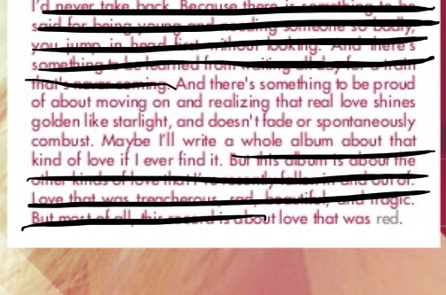

My love was as cruel as the cities I lived in
Everyone looked worse in the light
There are so many lines that I've crossed unforgiven
I'll tell you the truth, but never goodbye
I don't wanna look at anything else now that I saw you
I don't wanna think of anything else now that I thought of you
I've been sleeping so long in a 20-year dark night
And now I see daylight, I only see daylight
Luck of the draw only draws the unlucky
And so I became the butt of the joke
I wounded the good and I trusted the wicked
Clearing the air, I breathed in the smoke
Maybe you ran with the wolves and refused to settle down
Maybe I've stormed out of every single room in this town
Threw out our cloaks and our daggers because it's morning now
It's brighter now, now
I don't wanna look at anything else now that I saw you
(I can never look away)
I don't wanna think of anything else now that I thought of you
(Things will never be the same)
I've been sleeping so long in a 20-year dark night
(Now I'm wide awake)
And now I see daylight (Daylight), I only see daylight (Daylight)
I only see daylight, daylight, daylight, daylight
I only see daylight, daylight, daylight, daylight
And I can still see it all (In my mind)
All of you, all of me (Intertwined)
I once believed love would be (Black and white)
But it's golden (Golden)
And I can still see it all (In my head)
Back and forth from New York (Singing in your bed)
I once believed love would be (Burning red)
But it's golden
Like daylight, like daylight
Like daylight, daylight
I don't wanna look at anything else now that I saw you
(I can never look away)
I don't wanna think of anything else now that I thought of you
(Things will never be the same)
I've been sleeping so long in a 20-year dark night
(Now I'm wide awake)
And now I see daylight (I see daylight), I only see daylight (Ah)
I only see daylight, daylight, daylight, daylight
I only see daylight, daylight, daylight, daylight (Ah)
I only see daylight, daylight, daylight, daylight
I only see daylight, daylight, daylight, daylight
Like daylight
It's golden like daylight
You gotta step into the daylight and let it go
Just let it go, let it go
I wanna be defined by the things that I love
Not the things I hate
Not the things that I'm afraid of, I'm afraid of
Not the things that haunt me in the middle of the night
I, I just think that
You are what you love